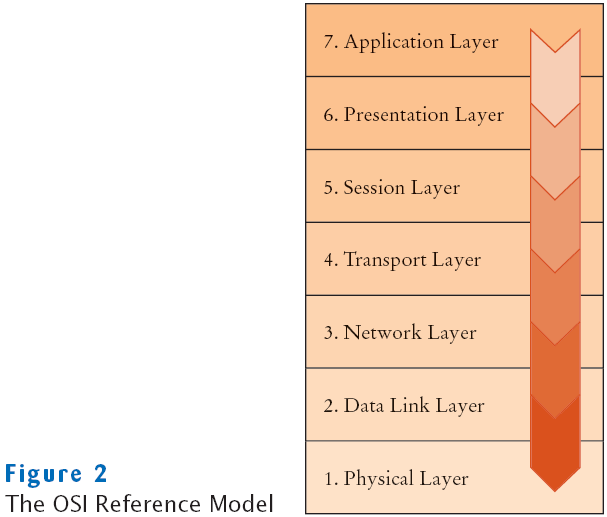

Chapter 24
Internet Networking
Chapter Goals
- To understand the concept of sockets
- To learn how to send and receive data through sockets
- To implement network clients and servers
- To communicate with web servers and server-side applications through Hypertext Transfer Protocol (HTTP)
The Internet Protocol
- Internet
- A worldwide collection of networks, routing equipment, and computers
- Uses a common set of protocols to define how the parties will interact with each other
- IP: Internet Protocol
- Developed to enable different local area networks to communicate with each other
- Has become the basis for connecting computers around the world together over the Internet
Data Transmission
- Consists of sending/receiving streams of zeros and
ones along the network connection
- Two Types of Information
- Application data
- The information one computer wants to send to another
- Network protocol data
- Describes how to reach the intended computer
- Describes how to check for errors in the transmission
Sending Data from A to B across the Internet
- A is you home computer
- It is connected by phone lines to an Internet Service Provider (ISP)
- The ISP is connected to an Internet Access Point
- B is on an local area network at XYZ Computers
- XYZ has its own Internet Access Point
- The Internet Access Points are connected by a complex collection of pathways
(the Internet)
- Over these pathways a message sent from one access point can eventually
reach any access point
Two Computers Communicating across the Internet

Destination Address
- Data must be marked with a destination address
- In IP, addresses are denoted by a sequence of four numbers
- Each is one byte (a number between 0 and 255)
- For example 130.65.86.66
- To be able to accommodate more devices, IP addresses will be extended to sixteen bytes
- To send data to B, A needs to know B's Internet address
- A includes that address in the protocol portion when sending
the data
Domain Naming Service
- In addition to an IP address, computers can have an easy-to-remember domain
name
- For example, java.sun.com
- Domain Naming Service (DNS): translates from domain
name to IP address
- When A wants to request data from a domain name:
- It asks the DNS for the numeric Internet Address
- It includes the numeric address with the request for data
Packets
- IP breaks large chunks of data up into more manageable packets
- Each packet is delivered separately
- Each packet in a larger transmission may be sent by a different route
- Packets are numbered
- The recipient reassembles the data
Transmission Control Protocol
- Internet Protocol (IP) does not notify the sender if data is lost or garbled
- This is the job of a higher level protocol Transmission Control Protocol
(TCP)
- The most commonly used Internet services use TCP with IP (TCP/IP)
TCP's Job
- Attempt to deliver the data
- Try again if there are failures
- Notify the sender whether or not the attempt was successful
Port Numbers
- One computer can offer multiple services over the Internet
- For example, both a web server program and an email server program
- When data are sent to that computer, they need to indicate which program
is to receive the data
- IP uses port numbers for this
- A port number is an integer between 0 and 65,535
- The sending program must know the port number of the receiving program
- This number is included in the transmitted data
Contents of TCP Packet
- The Internet address of the recipient
- The port number of the recipient
- Internet address of the sender
- The port number of the sender
Self Check
- What is the difference between an IP address and a domain name?
- Why do some streaming media services not use TCP?
Answers
- An IP address is a numerical address, consisting of four or sixteen bytes. A
domain name is an alphanumeric string that is associated with an IP address.
- TCP is reliable but somewhat slow. When sending sounds or images in real
time, it is acceptable if a small amount of the data is lost. But there is no point in
transmitting data that is late.
The OSI Reference Model

Application Level Protocols
- TCP/IP mechanism establishes an Internet connection between two ports on
two computers
- Each Internet application has its own application protocol
- This application protocol describes how data for that application are transmitted
Hypertext Transfer Protocol (HTTP)
- Application protocol used by the World Wide Web
- A web address is called a Uniform Resource Locator (URL)
- You type a URL into the address window of your browser
- For example, http://java.sun.com/index.html
Browser Steps
- Examines the part of the URL between the double slash and the
first single slash
- In this case: java.sun.com
- This identifies the computer to which you want to connect
- Because it contains letters, this part of the URL is a domain name, not an IP address
- Browser sends request to a DNS server to obtain IP address for java.sun.com
Browser Steps
- From the http: prefix, browser deduces that the protocol is HTTP
- It establishes a TCP/IP connection to port 80 at IP address obtained in step 1
- It deduces from the /index.html that you want to see the file /index.html
and sends this request formatted as an HTTP command through the established
connection
GET /index.html HTTP/1.0
a blank line
Browser Steps
- Web server running on computer whose IP Address was obtained
above receives the request
- It decodes the request
- It fetches the file /index.html
- It sends the file back to the browser on your computer
- The browser displays the contents of the file for you to see
- Since this file is an HTML file, it translates the HTML codes into
fonts, bullets, etc.
- If the file contains images, it makes more GET requests through
the same connection
Telnet
- Telnet program allows you to
- Type characters to send to a remote computer and
- View the characters that the remote computer sends back
- It is a useful tool to establish test connections with servers
- You can imitate the browser connection by using a dialog box or typing at
the command line
telnet java.sun.com 80
Telnet
- After Telnet starts, type the following without using backspace
GET / HTTP/1.0
then hit Enter twice
- The server responds to the request with the file
- Telnet is not a browser
- It does not understand HTML tags so it just displays everything it was sent
Web Server Response in Telnet
HTTP
- Do not confuse HTTP with HTML
- HTML is a document format that describes the structure of a document
- HTTP is a protocol that describes the command set for web server requests
- Web browsers
- Know how to display HTML documents
- And how to issue HTTP commands
- Web servers
- Know nothing about HTML
- Merely understand HTTP and know how to fetch the requested items
HTTP Commands
| Command | Meaning |
|---|
| GET | Return the requested item |
| HEAD | Request only the header information of an item |
| OPTIONS | Request communications options of an item |
| POST | Supply input to a server-side command and return the result |
| PUT | Store an item on the server |
| DELETE | Delete an item on the server |
| TRACE | Trace server communication |
Application Level Protocols
- HTTP is one of many application protocols in use on the Internet
- Another commonly used protocol is the Post Office Protocol (POP)
- POP is used to download received messages from e-mail servers
- To send messages, you use another protocol: Simple Mail Transfer Protocol (SMTP)
A Sample POP Session
Self Check
- Why don't you need to know about HTTP when you use a web browser?
- Why is it important that you don't make typing errors when you type HTTP
commands in Telnet?
Answers
- The browser software translates your requests (typed URLs and mouse clicks
on links) into HTTP commands that it sends to the appropriate web servers.
- All keystrokes that you type, including the backspace key, are sent to the server.
The server does not recognize a character sequence such as G W Backspace E T
as a valid command.
A Client Program – Sockets
- A socket is an object that encapsulates a TCP/IP connection
- There is a socket on both ends of a connection
- Syntax to create a socket in a Java program
Socket s = new Socket(hostname, portnumber);
- Code to connect to the HTTP port of server, java.sun.com
final int HTTP_PORT = 80;
Socket s = new Socket("java.sun.com", HTTP_PORT);
- If it can't find the host, the Socket constructor throws an UnknownHostException
A Client Program – Input and Output Streams
Client and Server Sockets

A Client Program – Scanners and Writers
A Client Program – WebGet
File WebGet.java
Output
Getting / from java.sun.com
HTTP/1.1 200 OK
Server: Netscape-Enterprise/6.0
Date: Wed, 21 Jul 2004 23:47:27 GMT
Content-type: text/html;charset=ISO-8859-1
Connection: close
<!DOCTYPE HTML PUBLIC "-//W3C//DTD HTML 4.01 Transitional//EN">
<html>
<head>
<title>Java Technology</title>
. . .
</body>
</html>
Self Check
- What happens if you call WebGet with a nonexistent resource, such as
wombat.html at java.sun.com?
- How do you open a socket to read e-mail from the POP server at
e-mail.sjsu.edu?
Answers
- The program makes a connection to the server, sends the GET request, and prints
the error message that the server returns.
- Socket s = new Socket("e-mail.sjsu.edu", 110);
A Server Program
- Sample server program: enables clients to manage bank accounts in a bank
- When you develop a server application, you need some application-level protocol
- The client can use this protocol to interact with the server
- A simple bank access protocol is described on the next slide
Simple Bank Access Protocol
| Client Request | Server Response | Meaning |
|---|
| BALANCE n | n and the balance | Get the balance of account n |
| DEPOSIT n a | n and the new balance | Deposit amount a into account n |
| WITHDRAW n a | n and the new balance | Withdraw amount a from account n |
| QUIT | None | Quit the connection |
A Server Program
- The server waits for clients to connect on a certain port
- To listen for incoming connections, use a server socket
- To construct a server socket, provide the port number
ServerSocket server = new ServerSocket(8888);
- Use the accept method to wait for client connection and obtain
a socket
Socket s = server.accept();
BankService service = new BankService(s, bank);
A Server Program – BankService
A Server Program – executeCommand
- Processes a single command
- If the command is DEPOSIT, it carries out the deposit
int account = in.nextInt();
double amount = in.nextDouble();
bank.deposit(account, amount);
- WITHDRAW is handled in the same way
- After each command, the account number and new balance are sent to the client:
out.println(account + " " + bank.getBalance(account));
A Server Program
- doService returns to the run method if the client closed the connection
or the command equals QUIT
- Then run closes the socket and exits
- How can we support multiple simultaneous clients?
- Spawn a new thread whenever a client connects
- Each thread is responsible for serving one client
A Server Program – Threads
Using the Telnet Program to Connect to the BankServer
File BankServer.java
File BankService.java
File Bank.java
File BankClient.java
Output
Sending: DEPOSIT 3 1000
Receiving: 3 1000.0
Sending: WITHDRAW 3 500
Receiving: 3 500.0
Sending: QUIT
Self Check
- Why didn't we choose port 80 for the bank server?
- Can you read data from a server socket?
Answers
- Port 80 is the standard port for HTTP. If a web server is running on the same
computer, then one can't open a server socket on an open port.
- No, a server socket just waits for a connection and yields a regular Socket object
when a client has connected. You use that socket object to read the data that the
client sends.
URL Connections
- URLConnection Class
- Provides convenient support for HTTP
- Can also handle FTP (file transfer protocol)
- Takes care of socket connection for you
- Makes it easy to communicate with a web server without giving HTTP commands
URL Connections
- Construct a URL object from a URL starting with the http or ftp
prefix
URL u = new URL("http://java.sun.com/index.html");
- Use the URL's openConnection() method to get the URLConnection
URLConnection connection = u.openConnection();
- Call the getInputStream method to obtain an input stream
InputStream instream = connection.getInputStream();
- You can turn the stream into a scanner in the usual way
HTTP Commands
command
request properties
blank line
- HTTP command
- Such as GET item HTTP/1.0
- request properties
- Such as If-Modified-Since: date
- blank line
- separates the command and its request properties from the input data
URLConnection Class
Server Response
- Server response:
status line containing response code
response parameters
blank line
- For example:
HTTP/1.1 200 OK
Date: Sun, 28 Aug 2005 00:15:48 GMT
Server: Apache/1.3.3 (Unix)
Last-Modified: Thu, 23 Jun 2005 20:53:38 GMT
Content-Length: 4813
Content-Type: text/html
blank line
requested data
- Normally, you don't see the response code, in this case: 200 OK
- You may have run across bad links and see a page that contains response code 404 Not Found
Retrieving Response Code and Message
Retrieve Other Response Information from URLConnection
File URLGet.java
Output
Using http://java.sun.com/
200 OK
<!DOCTYPE HTML PUBLIC "-//W3C//DTD HTML 4.01 Transitional//EN">
<html>
<head>
<title>Java Technology</title>
. . .
</body>
</html>
Self Check
- Why is it better to use an URLConnection instead of a socket when reading data from a web server?
- What happens if you use the URLGet program to request an image (such as http://java.sun.com/im/logo_java.gif)?
Answers
- The URLConnection class understands the HTTP protocol, freeing you from
assembling requests and analyzing response headers.
- The bytes that encode the images are displayed on the console, but they will
appear to be random gibberish.